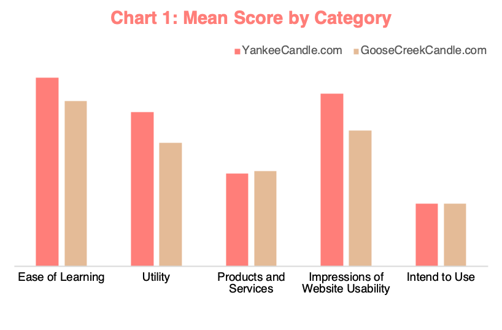

I grow up in Isfahan, Iran, and started my engineering career at the Isfahan University of Technology, getting a bachelor of science in Industria Engineering. I moved to the US for higher education and was able to get my master's in Systems Engineering and in Computer Science from the University of Arizona. Currently, I am finishing up my Ph.D. in Systems and Industrial Engineering. My research topic is related to the Natural Language Processing field, mainly the Question Answering problem. In my free time, I enjoy playing basketball, practicing drums, and traveling to different parts of the world.
The objective of this project was to capture the usability evaluation of Yankeecandle.com and GooseCreekCandle.com, two online candle shopping websites. For this research participants were asked to answer questionnaires analyzing the usability of these websites. Data were collected from four participants. Table 1. shows the participants' demographics.
| Table 1. Participant Demographics | ||
|---|---|---|
| Number of Participants | 4 | |
| Age | Average Age | 28 |
| Youngest | 21 | |
| Oldest | 31 | |
| Gender | Make | 75% |
| Female | 25% | |
| Own a Computer | Yes | 100% |
| No | 0% | |
| Learned to use the Internet | Family Member | 25% |
| Friend | 50% | |
| Training Class/School | 0% | |
| Self-taught | 100% | |
| Connect to Internet | At Home | 100% |
| At School | 50% | |
| At the Library | 25% | |
| Other | 50% | |
| Type of Internet Connection used | Dial-up | 0% |
| High-speed | 100% | |
| Do not know | 0% | |
In the questionnaires, internet usage of the participants was collected as well. Table 2. shows the descriptive statistics of internet usage for the participants. These tests were conducted in October of 2020. the questioners were sent to participants via email, and they were asked to participate within 24 hours.
| Table 2: Descriptive Statistics of Participants (con't) | ||||
|---|---|---|---|---|
| The Internet is used | Daily | Weekly | Monthly | Other |
| 100% | 0% | 0% | 0% | |
| Has been a user of the Internet | < 1 yr | 1 -2 years | 2 - 3 years | > 3 years |
| 0% | 0% | 0% | 100% | |
| The number of times during the past year that a purchase was made using the Internet |
None | 1 - 5 | 5-10 | <10 |
| 0% | 0% | 0% | 100% | |
| The number of times during the past year that a candle was purchased from an online store |
None | 1 - 5 | 5-10 | <10 |
| 75% | 25% | 0% | 0% | |
Each participant was asked to go to visit each website and report their experience on the questionnaire, including 27 questions. The answers for these questions were then processed and summarized into four categories: Intended to use, ease of learning, utility, products and service, and impression of website useability. The summery of participants responds are shown in Table 3.
| Table 3: Descriptive Statistics of All Responses for Each Website | |||||||||
|---|---|---|---|---|---|---|---|---|---|
| YankeeCandle.com | GooseCreekCandle.com | Both Websites | |||||||
| Variable | Range | Mean | SD | Range | Mean | SD | Range | Mean | SD |
| Behavioral Intention to Use the Websites | 1:6 | 2.25 | 2.50 | 1:5 | 2.25 | 1.89 | 1:6 | 2.25 | 2.05 |
| Perceived Ease of Learning the Websites | 6:7 | 6.80 | 0.41 | 3:7 | 5.95 | 1.19 | 3:7 | 6.38 | 0.98 |
| Perceived Utility of the Websites | 2:7 | 5.56 | 1.50 | 1:7 | 4.44 | 1.63 | 1:7 | 5.00 | 1.65 |
| Products and Services Offered by the Websites | 1:5 | 3.33 | 1.56 | 1:6 | 3.42 | 1.78 | 1:6 | 3.38 | 1.64 |
| Impression of the Usability of the Websites | 4:7 | 6.21 | 0.83 | 1:7 | 4.88 | 1.73 | 1:7 | 5.54 | 1.50 |
Chart 1 summarizes the mean score for each website. As you can see YankeeCandle.com was able to achieve better results on "ease of learning", "utility", and "impressions of website useability". Both websites performed similarly in the "intend to use" and "products and service" categories. This shows on average YankeeCandle.com performed better than GooseCreeckCandle.com. The standard deviation for all categories except "ease of learning" for GooseCreeckCandle.com were higher than YankeeCandle.com meaning users opinion varied more when using YankeeCandle.com
Overall, based on this study on four participants, YankeeCandle.com is the clear winner.
Based on the usability research I conducted, now I know where to shop for candles if I ever needed it. In addition to this great finding, I learned more about performing user usability research and most importantly how to represent the data to the public. Learning to show data in tables and charts with clear formats and minimal data so people can take away the idea within a glance.
Also, I learned designing a website using HTML and CSS. This was a great exercise helping me to learn more about website design and using in a real research study.